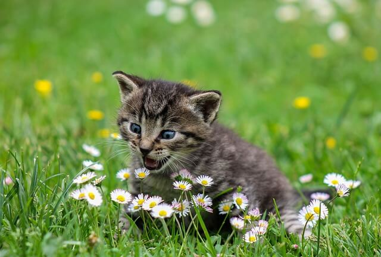
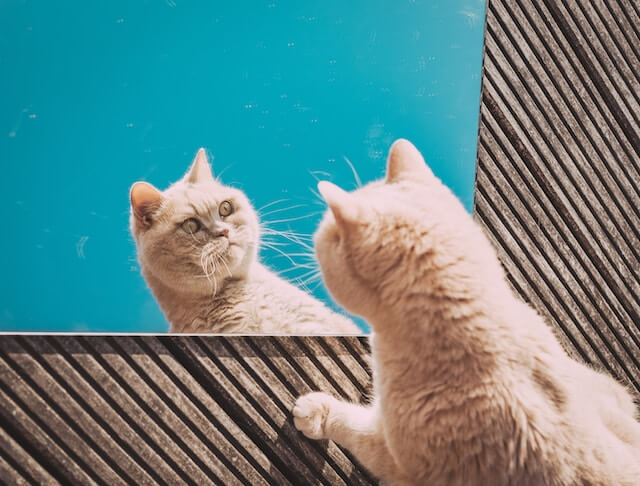

Are you ready?
Behold, for this vast collection of evidence may guide you to a path of enlightenment!
Dive back into the past
Did you know that in the times of Ancient Egypt, people worshipped feline companions? This undoubtedly forms one of the earliest evidences of the extraterestrious nature of cats. Egyptians were ahead of their time and knew that and therefore did not want to upset them in any way. It is speculated that cats helped them build pyramides as a form of a gift to their followers.
Alien Probability Analysis table (APA table)
We have been working hard on creating this analytical tool based on behavioural patterns of different kinds of cats. While we believe all cats are of alien descent, others hide their true alien personalities better than others. Because of that some cats have a higher probability of being an alien than others. Keep comming back for up-to-date info! This is stillunder a heavy scientific research.
| Alien probability | Cat Type | Danger level | Description |
|---|---|---|---|
| Extremely High | Orange Cat | Critical |
|
| Sphynx Cat | Unknown |
|
|
| High | Black Cat | Medium |
|
| Medium | Siamese Cat | Low |
|
| Tabby Cat | Medium |
|
|
| Low | Calico Cat | Varies |
|
Check it out for yourself!
Look at this evidence whete there is a cat caught on camera communicating with its mothership. Can you see the open-mouthed gaze? Do not confuse this with a yawn! This cat is in the middle of an encrypted communication via a high frequency signal. Based on our expert examination we were able to reasonable determine that the daises on the picture are not in fact part of the natural flora of the earth as they are disguised intergalactic relay devices. We recommend not to interfere with the cat in this stage.
Cats are absolutely fantastic at masking themselves and blending in. However sometimes that comes at a cost when they are unexpectadly confrontated with a mirror. There are documentated cases where they weren't able to recognise themselves. They can be caught gazing at themselves. Have a look:
